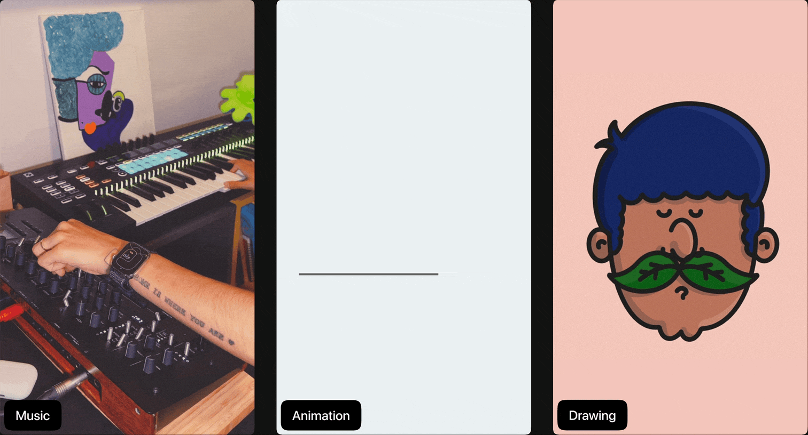

Hi ,I'm a multidisciplinary designer and visual artist. I have a diverse background in design, art, and multimedia, with a strong focus on the intersection of technology and art.
Music has also been a big part of my life, I compose electronic music and play piano.
2014 - Master's in Digital Media
2011 - Bachelor's in Visual and Media Arts
Scholars
Lev Manovich, Marshall McLuhan
Artists
Roy Lichtenstein, John Cage
Books
Life 3.0, Fear of Music
© 2025 • Bettsina Walkinson • Bettsinawalks